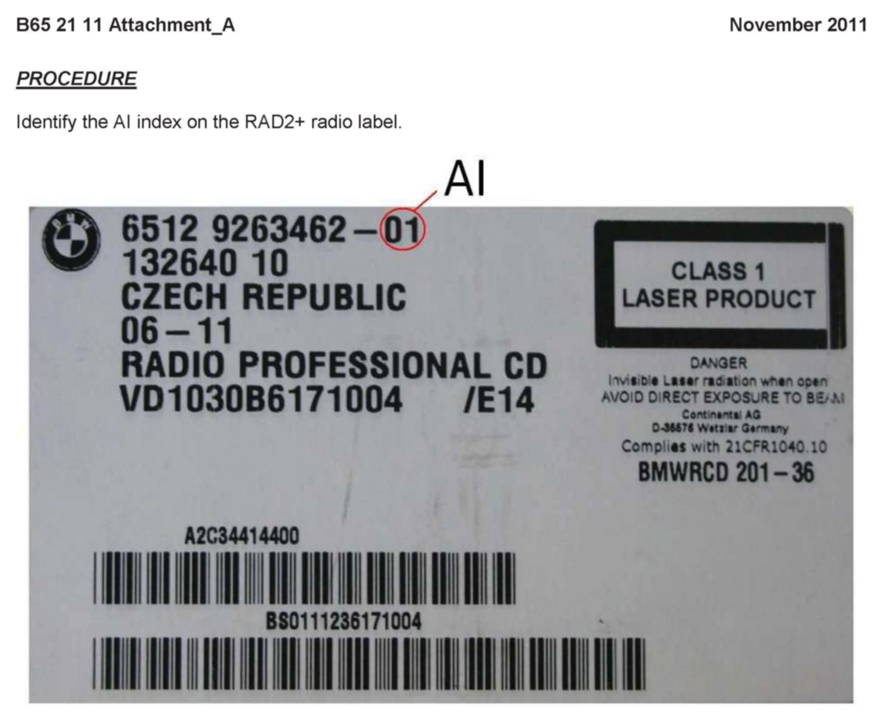

Entertainment Sys - Temp. Radio Replacement Procedure
SI B65 21 11Audio, Navigation, Monitors, Alarms, SRS
November 2011
Technical Service
SUBJECT
RAD2 and RAD2+: Temporary Procedure for Radio Replacement
MODEL
E82, E88 (1 Series)
E89 (Z4)
E90, E91, E92, E93 (3 Series)
Vehicles produced from 09/2007 with option 663 (Radio Professional, RAD2 or RAD2+)
SITUATION
After the radio was replaced, the display on the replacement radio is inoperative afier programming with ISTA/P.
Note:
Audio output is still working.
To avoid unnecessary multiple radio replacements, a temporary procedure is currently in place for coding replacement radio parts.
CAUSE
Error in the programming software of ISTA/P 2.43.2 or higher.
PROCEDURE
In cases where a radio replacement cannot be avoided, check if the AI index of the radio is 01 or 02. The AI index number is printed on the label on the radio next to the part number. See Attachment_A.
If the AI index is 02 on the replacement radio, proceed with programming of the replacement radio through ISTA/P. No further steps necessary.
When the AI index is 01, do not program the replacement radio with ISTA/P!
Submit a PuMA case with the subject line "RAD2/RAD2+ replacement radio - SI B65 21 11" to get technical support (online programming) through the Technical Service Department.
This procedure is effective until the release of ISTA/P 2.45.0.
ATTACHMENT

B652111 Attachment A